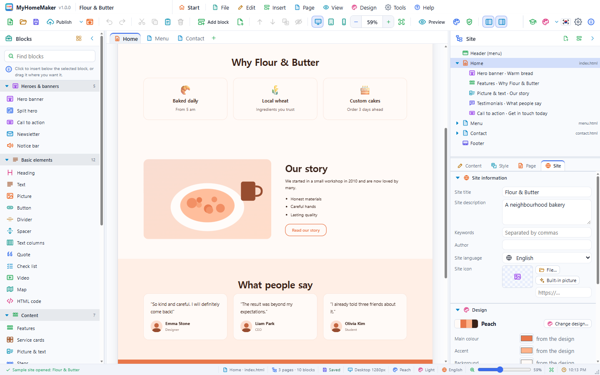

MyHomeMaker Tutorial — your first website
This tutorial builds the website of a neighbourhood café, "Daily Coffee", from scratch and publishes it. It takes about 30 minutes. Menu and button names are written as the app shows them. Every feature is described in the user's guide.
The tour in the app (Help › Tutorial, F11) shows the same on the real screen. This document is a hands-on exercise.
1. Create a site
- Start MyHomeMaker; the start page appears.
- Press New site… on the toolbar (or File › New site…, Ctrl+N).
- Pick Templates on the left and the Café card.
- Type
Daily Coffeeinto Site name and press Create.

The café template has one page with a split hero, a menu, a gallery and a contact block. The header already carries the site name.
2. Look around

- Blocks panel (left): the blocks you can add
- Page tabs and canvas (centre): the real site
- Site panel (right): the header, pages, blocks and footer at the top, the Content · Style · Page · Site editors below
Fit width on the toolbar (Ctrl+Shift+W) shows the whole page width on the canvas.
3. Change the headline
- Click the banner at the top of the canvas once. A blue outline and a name tab appear.
- Click the big title once more: the text is selected and can be typed over.
- Type
Start your day with a good cupand press Enter.

The small title, the text and the button work the same way. The Content tab on the right has the same fields. Press Ctrl+Z to undo a change.
4. Change the picture
- Double-click the banner's picture: a file window opens. Choose a photo of your café.
- No photo yet? In the Content tab, use Built-in picture › Café of the picture field.
Large photos are scaled so their longest side is 1920 px. You can also drop a picture file onto the selected block.
5. Edit the menu
- Click the Menu block.
- In the Dishes list at the bottom of the Content tab, change each item's name, description and price.
- Press Add and enter
Vanilla latte · Sweet vanilla · 5.50. - Reorder items with their ↑ ↓ buttons; the bin deletes one.

6. Add and move blocks
- Drag Content › Features from the Blocks panel onto the canvas, above the menu. A blue line shows where it will go.
- Change the three features to
Roasted here,Baked every morningandA quiet upstairs. The icon field takes emoji (☕ 🥐 🪑). - Click Showcase › Testimonials to add it (it goes right below the selected block).
- Drag a block's name tab to move it, or use Move up · Move down on the toolbar (Ctrl+↑/↓).

7. Style a block
- Select the testimonials and open the Style tab on the right.
- Set Background to Light surface, and Space above and Space below to 96 px.
- Set Alignment to Centre.

8. Add a page
- Press the + at the end of the tabs (or Page › Add page…).
- Name it
Visit us, choose Contact to start with, and press OK. - In the new page's Contact block, change the address, phone and opening hours, and put the café's address into Map place.
- See
Visit usappear in the header menu by itself.

The Page tab sets the file name (visit-us → visit-us.html), the browser title and the search description.
9. Change the design
- Open Design › Change design… (Ctrl+Shift+D).
- Double-click Wood or Peach among the Light designs to use it at once.
- Try others until you like one: the content stays, only colours and fonts change.
- To fine-tune, change Main colour or Heading font in the Site tab.

10. Check it on a phone
- Press the Phone button on the toolbar. The canvas becomes 390 px wide and the menu folds into ☰.
- For a block you do not need on phones, turn on Style › Hide on phones.
- Go back with the Desktop button.

11. Preview
- Preview (Ctrl+E) shows the site as visitors see it. Click
Visit usin the menu to switch pages; Esc goes back. - Preview in browser (F5) opens the site in the system browser.

12. Site information and saving
- Clear the selection (Esc) and, in the Site tab, write a Site description:
Daily Coffee — beans roasted here, bread baked every morning. - Save (Ctrl+S) as
Daily Coffee.myhome. The pictures are inside this one file too.

13. Check and publish
- Tools › Check the site lists anything to fix.
- Press Publish on the toolbar (Ctrl+Shift+P).
- Choose Folder (desktop) or ZIP file, keep Pictures as files on, and press Publish.
- After publishing to a folder, press Open in browser to see the result.

The published folder holds index.html, visit-us.html, style.css and assets/.
14. Put it online
- GitHub Pages: create a repository, upload the published files, and turn it on in Settings › Pages.
- Netlify: drop the folder or the ZIP onto Sites at app.netlify.com.
- Web hosting: upload the files with FTP into the web root (
public_htmlor similar).
To get the contact form by e-mail, get an address from a form service such as Formspree, put it into the Form endpoint of the Contact block and publish again.
Next steps
- Open the 16 samples from File › Open sample site and see how they are built.

- Save layouts you use often as a template with File › Save as template… (.mhomt).
- Help › Keyboard shortcuts… lists every keyboard shortcut.